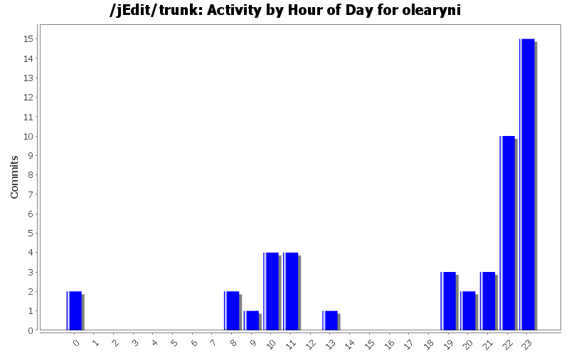
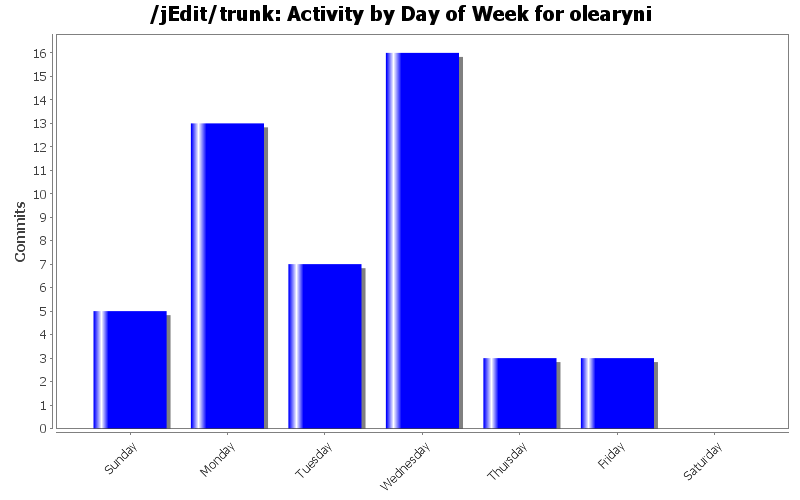
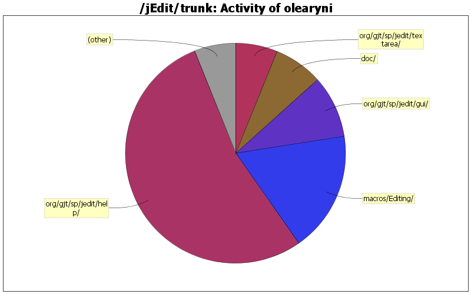

| Directory | Changes | Lines of Code | Lines per Change |
|---|---|---|---|
| Totals | 47 (100.0%) | 814 (100.0%) | 17.3 |
| org/gjt/sp/jedit/help/ | 9 (19.1%) | 437 (53.7%) | 48.5 |
| macros/Editing/ | 2 (4.3%) | 145 (17.8%) | 72.5 |
| org/gjt/sp/jedit/gui/ | 2 (4.3%) | 74 (9.1%) | 37.0 |
| doc/ | 15 (31.9%) | 59 (7.2%) | 3.9 |
| org/gjt/sp/jedit/textarea/ | 4 (8.5%) | 50 (6.1%) | 12.5 |
| org/gjt/sp/jedit/ | 7 (14.9%) | 16 (2.0%) | 2.2 |
| org/gjt/sp/jedit/search/ | 1 (2.1%) | 9 (1.1%) | 9.0 |
| org/gjt/sp/jedit/print/ | 1 (2.1%) | 9 (1.1%) | 9.0 |
| org/gjt/sp/jedit/options/ | 1 (2.1%) | 9 (1.1%) | 9.0 |
| org/gjt/sp/jedit/pluginmgr/ | 1 (2.1%) | 2 (0.2%) | 2.0 |
| startup/ | 1 (2.1%) | 1 (0.1%) | 1.0 |
| package-files/linux/ | 1 (2.1%) | 1 (0.1%) | 1.0 |
| installer/ | 1 (2.1%) | 1 (0.1%) | 1.0 |
| doc/users-guide/ | 1 (2.1%) | 1 (0.1%) | 1.0 |

another fix for $@ -> "$@"
1 lines of code changed in 1 file:
[ 1649695 ] jedit shell script doesn't handle spaces in filenames
5 lines of code changed in 2 files:
Reload/ReloadAll ignores buffers with NEW_FILE set.
11 lines of code changed in 3 files:
fix for [ 1542029 ] Wrong annotation in Search and Replace dialog
6 lines of code changed in 2 files:
Updated RegisterViewer
49 lines of code changed in 3 files:
Fixed s() method on startup.bsh
4 lines of code changed in 2 files:
*** empty log message ***
1 lines of code changed in 1 file:
Fix 1524155 - replace all in selection not giving feedback
12 lines of code changed in 2 files:
Updated docs on printing
1 lines of code changed in 1 file:
Added support for folded regions to not appear in print output.
21 lines of code changed in 4 files:
Fix SF bug 1524032
5 lines of code changed in 1 file:
Fix 1524032: Line number not highlighted when the line contains the sole selection
1 lines of code changed in 1 file:
Fixed (again) beanshell error on invocation. Also gives input field focus.
128 lines of code changed in 1 file:
Fixed Mode_Switcher macro
23 lines of code changed in 2 files:
*** empty log message ***
2 lines of code changed in 1 file:
Fixed some additional RegisterViewer issues
35 lines of code changed in 2 files:
*** empty log message ***
12 lines of code changed in 2 files:
*** empty log message ***
20 lines of code changed in 4 files:
Added better history model for the Help browser
408 lines of code changed in 4 files:
*** empty log message ***
3 lines of code changed in 1 file:
(6 more)